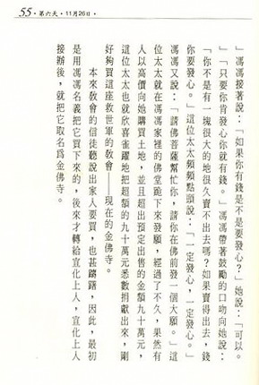
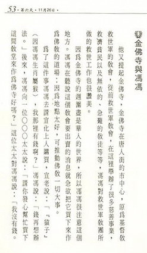

宣化长老西来记
冯冯
一、初识宣老
远在十多年前，我已久仰宣化老法师在美国西岸传法的盛名，心里就想去听听他的说法，可是由于职业羁绊，总不得其便离开加拿大前往旧金山。谢冰莹教授寄了些佛刊给我看，其中有几本是中英对照的“金刚菩提海”杂志，是由旧金山的中美佛教会编印的，里面登有一篇“宣化老法师讲法”的弟子笔录，这是我接触宣化法师言教的开始，不过当时我一直以为讲稿是他预先写好的，直到后来我有机缘亲往金山寺听法，才知道他并不动笔，那是登台讲法随口而出听琳琅文章，由众弟子用录音机录下之后，笔录出来，又译成英文对照刊出的。
“金刚菩提海”当时尚是雏形，未有今日之规模，初期甚至仅是油印复写的，但是内容很好，良好的开始，奠定了基础，发展为今日在美国的最重要的佛教刊物之一。
当时我年少好胜，偶然看到该刊内有一些中译英的微疵，我就斗胆不客气地摘出，写了一封长信去给宣化法师；不过我也声明是善意的批评，而且也说明我自己学浅，也还译不了那么好。
这件事，后来我才知道自己多么浅薄。多年后，宣化老法师偶然提起，笑着对我说：“你不给我们写文章，反而狠狠地批评了我们一顿，不过批评得很有道理，我们都采纳你的意见改进了。”宣老和尚谦虚，令我钦敬，也就更显得我自己的浅薄了。
直到现在，我真是相当的亲近宣老和美佛教会了，可是我仍然还没开始为他们写文章，为什么呢？倒不是我不愿写，而是力不从心；我只是个写小说的人。
“金刚菩提海”篇篇都是佛教理论文章，我不知应该写些什么才好。我为香港的佛学权威刊物“内明”写些随笔，已有好几年，我那些小文本是不登大雅之堂的外行文章，“内明”佛刊也是篇篇都是深奥的佛学论文，但是留有少许篇幅给文艺作品，破格采用拙文，这是我意想不到的。“金刚菩提海”则至今仍未开辟固定的文栏，我答应了给他们写小说，可是由于自己欠的稿债多，赶不出来，同时也感觉到佛教小说太不容易写，未敢下笔。我多次向宣老致歉，他老人家都说：“不要急，慢慢来好了。”
二、宣老与金山寺
金山寺的地点是在美国三藩市南区的第十五街一七三一号，是一处热闹的区域，虽非主要的通衢大道，却也太接近繁华花花世界了，不远处有两家电影院，都是上映些不怎么高尚的“成人电影”的，附近的街道又有些不三不四的俱乐部，寺院对面是几座公寓，日夜有些妇女在附近流连嚣闹，街角则常有些男孩站在中笾不知干些什么，我总觉得那地区并不是干净的所在，我就不太明白，宣化长老和他的高徒们，当初怎么会选择了这样一个地点来设寺的。我却不知道他们师徒当初筚路篮缕创业的艰辛。
原来宣化长老十多年前从香港到美国来立愿传法之始，他到了三藩市，身边只剩下几十块钱了。他起先只租了唐人街的一家店铺的地下室作为驻锡及传法之所，三藩市是个五光十色的繁华大都会，物质享受，声色犬马，红尘滚滚，当时一般人对于佛教的兴趣是很小的，更少人注意到唐人街一处地下室的小小佛堂。宣化长老却不灰心气馁，他仍本着他一贯的宏愿，谋计孜孜不息的传法，他的苦行与佛学造诣终于渐渐引起一般社会人士注意。
关于宣化长老在那一段艰辛的岁月，三藩市一般人是有这么一个传说的──他们说，宣化长老在唐人街地下室传了几年佛法，始终是个穷道场，无法扩展，知道的人虽也不少，但大家都未予以重视，直到有一件佛家的奇迹发生之后，才轰动整个美国西岸。
他们说：当时有一位社会贤达的夫人患了癌症垂危，在医院中，医生们都说无可挽救了。那位夫人自知不起，要求家人为她请一位和尚来为她念经，当时在三藩市的佛教僧人很少，家人上那儿去找呢？不过记得时常上唐人街买东西路过，看见一处店铺地下室的窗子内有一位和尚念经，家人就想，姑且就请这位和尚去为他们的夫人念念经吧！这一家人当时对于念经也不存什么奢望，只不过当作尽心而已。
他们说：宣化长老应邀前往医院病榻前为那位贵夫人念经，一连念了几天，关于这一段传闻，有人说宣老当时念的是“大悲咒”，有人说他念的“心经”，有人说是“楞严咒”，各人传说不一；总之就是念的佛经就是了。然后，奇迹出现了！那位贵夫人听经之后，非但不曾如群医之预言如期逝世，反而渐渐康复，而且过了一段时间之后，医生检查她身内的癌，竟然消失了！
这件事当年轰动了美国西部，由是引起了中西人士源源不绝地前往访问宣化长老，而宣老总是谦辞不承认是他念经之功，他总是说，一切都是笃信佛法获得的奇迹！
为这事，我也问过宣老的，他微笑说：“我什么也不会，我不会治病，也没有法术，我就光会念佛经。”
谦虚的宣老，从不居功于任何奇迹。事实上，在他老人家的苦行传法数十年之中，发生类如上述的奇迹，多得不可胜数，但是他自己都不大谈这些事的。若有人问他，他都说假如有奇迹，都是由于信者的虔诚信心和善念获得佛祖龙天的庇佑！
宣老并不喜欢用奇迹来作为传法的宣传，他认为最重要的乃是佛法真义。在我接近他，聆听他讲经的时日之中，我从未听见人提起任何奇迹。他的讲经态度是十分严肃的，在他的周围，无论是出家弟子或在家弟子，都是十分恭谨肃穆的，可是在社会上，对于这位高僧则有很多的奇迹传说，真是不胜枚举。
我自己，可能也就是奇迹之一──像我这样的一块顽石，居然也被宣老的苦行传法所感动得点头了，岂非奇迹？
宣老在三藩市唐人街的地下室传法，竟吸引了整个美国的注意，我认为，主要的还是由于他说法的精辟，把佛法的精华毫无保留地介绍给西方社会，引起了美国青年知识份子的重视，至于各种奇迹，当然也有很大的推广功效，但是徒有奇迹，而无坚强用力的精微佛理，仍然是不可能获得像今天这样伟大的宏法成就的。
美国许多的高级知识份子纷纷来聆听宣化老讲解佛经，许多大学纷纷邀请他去讲解佛经，不少的美国博士、学士，听了他说法之后，纷纷皈依佛教，削发出家，归依宣老座下，精研佛理，翻译佛经为英文。宣老座下的美国青年博士、硕士、学士，有的是哈佛大学，有的是哥伦比亚大学、加州大学、史丹福大学、华盛顿大学、普林斯敦大学……等有名的学府。这些青年，有的是哲学博士，有的是理工科博士，有的是文科博士，他们都学有专长，素养很高，都放弃了收入丰富的职业；而来追随宣老，出家为僧为尼，宁愿吃苦，献身佛教的研究与传播工作。
在这批美国弟子的群策共力苦心发展之下，宣老领导的中美佛教会，从小小的地下室发展到今天占地三百余英亩的万佛城和法界大学，成为佛教在北美洲最具规模的传播基地之一。其中经过多少的艰辛！
那一段奋斗史，是不可能用短短的文字所能叙述得了的。他们起先在三藩市华盛顿街购置了一座大房子做道场和图书馆──现在已改为尼师驻锡之所，皈依宣老座下的美国弟子成为尼师的已有数十位之多，也都是有学位学识渊博的，精于翻译佛经。
稍迟，宣老和他的弟子与在家的居士们，大家又合力在十五街购买了一座火柴工厂，诸弟子自行动手装修，把它改建为今日的金山寺，规模虽未可称为恢宏，三层的佛殿大楼，也相当宽敞的了。
我曾经就金山寺的地点一节询问宣化长老。我说这座佛寺建在花花世界的当中，怎能清静呢？
宣老微笑回答：“就是在花花世界当中，才最适合考验出家人修行的意志呀！”
我这才恍然大悟，长老并未详说，但是我可以领悟，真的！只踏出寺门一步，门外就是繁华世界，声色诱惑，无所不有。出家人若不是有无比的坚毅意志，真不容易抗拒门外的一切诱惑的，我住在金山寺的期间，冷静观察，出家的美国青年，对于外界的诱惑，都是若不闻不见，他们心已如止水，令人钦佩！
我或许是极少数最幸运的在家人之一，获得如此亲近宣老的教诲，宣老明知我是个相当顽皮捣蛋的人，他却似乎是抱着一种有教无类的苦心，慈爱地温和地招待我，让我不时随侍在他身边，我想我了是极少数能够进入他的禅房的人之一。我所见到的他的禅房，可说是除开一榻一桌一椅之外，并无长物，没有什么家具，没有任何装饰，桌上也就只有一些佛经佛典，他是没有任何财物的，也没有什么衣物，他一年不分冬夏，仍是穿着那一袭已经破旧的裉色的僧袍，极寒冷的日子，他就再加一件棉背心，这就是他的全部衣物了。当然，还有一袭只有大典才穿的杏黄袈裟。
他的办公室是在他禅房的外一进，除了一张大书桌之外，有些沙发，作为招待来宾之用，桌上有些笔墨，其他也没有什么了。
说起笔墨，我知道宣老是不太喜欢动笔的，虽然他的书法也还不错，他却不大写信写什么。他常对我笑着说：“我的字写得不好，不愿写出去献丑。”
我也没看见过他写任何著作，虽然我常见他手不释卷，研究佛学。而他的每天的开讲，句句都是天然的好文章，弟子们只要照录出来就自然成了一篇论文了。我知道他是从不写草稿的，讲经的时候，他坐在座上，慢慢的讲，他是东北籍，讲的一口标准国语，他自谦不懂英文，他讲法都是用国语讲的，他的美国弟子们现场录音，并且轮流作即席的翻译，译成英文给道场中的听众听。宣老有时候讲上十多分钟，才停下来，让弟子翻译，我静听宣老的讲词，我又留心鉴定弟子们的译文，我觉得大致上他们都译得很恰当。不过，偶然也有些译错，这位自谦为不懂英文的宣化长老，往往就会提出更正，指示译错之处，并且指示应该怎么翻译，用什么英文字才对。他的更正，往往也是令我非常心服的。
四、佛教可用音乐传播
宣老不但是讲经说法之时用中文，就是在寺中开会议之时，他也只讲中文，我有时也叨陪末座，我发现宣老并非如他自谦的“不懂英文”。弟子们发言都是用英文，宣老都能听得懂，常在必需之处发表他的意见予以补充或有所指示。假如他真不懂英文，又怎会处处都提出适当的反应呢？宣老讲说不懂英文，可是他竟写了一首英文的佛诗，徒弟们觉得它很好，就谱成曲子，如今成为他们常常唱诵的佛曲之一，说到唱佛诗，宣老的徒弟们有很多创新，尼师们富于音乐天才，她们把很多佛偈佛词谱成了西方音乐感的诗歌，拿来做日常的唱诵，作为正常的佛曲唱诵的补充。佛教的传播，无可否认地是不及基督教的原因很多，佛教义理太深奥太繁复，不易为一般人接受，固是主因之一，佛教缺乏诗歌音乐，亦是一大原因。佛教的诗歌唱诵原非供娱乐之用，缺乏感人的力量。那些东方工的中国式的唱诵，在西方人听来是很难接受的，西方人听中国音乐的唯一感觉只是好奇，而毫无感动。佛教要在西方传播，在我的愚见看来，是需要稍为采用一点西方化的音乐的，所以我觉得宣老的高徒尼师们的创造，具有很大意义。
中美佛教会现在的宏法成效，非唯由于他们在宣老的领导之下苦干苦行，传法有力，也不单是由于他们热心社会福利慈善事业，我相信他们的西化佛曲，亦有与功焉！惭愧的是我自己，老是想为佛教写点西化的曲谱，却总因为谋生艰劳忙碌而未能动笔。
金山寺的寺规很严格，每天清晨三时就起来做早课，早上又有许多功课，一直忙到十一时半，才念经进膳，寺中“持午”，都是过午不食的。午膳后，只有短短的休息时间，徒众们又各忙各的职守事务了。下午又有一场讲经，七时左右大家又集合念经绕佛，八时宣化长老升座讲经，几十卷头的法华经和其他大部头经典，每天讲解一段，徒弟们录音录下的宣老讲经的录音带，已经有两万多卷了。
晚上十时，全寺止静，除了供佛的明灯之外，一律灭灯，唯一的不守规矩的，恐怕只是我一个人，我是个惯于熬夜写作的夜猫子，怎能早睡？我常常在自己房内看书，直到午夜后才能安寝，我的睡房给安排在宣老的禅房之侧，是最接近他的了。他常常在深夜过来敲门，问我毡子够不够暖，要不要添些，他真是慈爱得像父母一般。他也时常会和我在我房外的小小客厅谈话，一谈就谈到午夜，有时还谈到子夜一点多，平常不苟言笑的他，这时候温蔼极了，他会含笑地和我讨论法界大学的一些事务和宏扬佛教的做法，他会非常谦虚地把问题一一提出来征求我的愚见，作为他的参考。有时候他就为我特别讲解一些佛经，我的不守寺规晚睡，竟把宣老也累得破例晚睡了，寺中弟子都说师父是从没这样做过的。
宣老不喜欢世俗的应酬，可是有许多达官贵人和社会名流常常来访他，他也只好在每天下午规定的会客时间内接见他们了，这种会客多数是在二楼的大会客室举行的，我若在寺中，多半被长老叫去参加作陪。
五、为佛教教育尽心力
记得有一次，宣老邀了一位颇负盛名的教授来会面，要请这位教授到万佛城的法界大学担任一项课程。我当时亦随侍在侧，宣老拉着我手，叫我在他身边坐下相陪，教授则坐在客位，宣老非常恳切地请教授接受教职，但是教授无论如何都不肯，教授说家眷在美东，搬来很不方便，不搬来又两头难以兼顾，教授又似乎嫌万佛城法界大学地点太遥僻了──万佛城位于加州北部，距旧金山有百余英里，崎岖山路开车要两小时才到。先一天我曾领那位教授到万佛城去看过，教授有他个人的困难，我是可以理解他坚辞的苦衷，我同时也常常为长老的求才推动佛教教育的诚恳热忱所感动。在这两者之间，我自无置喙之地，亦难以为辞令，勉强帮着长老劝驾请教授屈就，我拙于口才，讲了也等于白讲。
正感到尴尬的时候，忽有弟子来报有人求见长老。而宣老正在忙着商谈，我就请示长老说：“可否由我代表到楼下去先会见一下呢？”我说因为感觉到这来的两位女士是从台湾老远来的，她们似是为了一座观世音菩萨佛像的事来的。
宣老是不时有“预知”的，这是很多人都共和的事，而事情也真奇怪，我在佛寺及宣老身边之时，也常会有这一类预见发生，我亦无法解释。我当时下楼，果然在大门口会见了两位来自台北的女士，她们是母女两位，一问她们来意，果然是想来求宣老为她们从台北携来的一座观世音菩萨瓷像开光的。我就在楼下接待她们，请她们稍等一会儿，正在谈话之间，我忽然闪电般看见宣老在楼上以袖袍掩面流泪，把我吓了一惊，隔了一层大楼，许多墙壁楼板，这岂不太奇怪了吗？
我这一吓，慌忙拉住几位大弟子说：“我们快上去看，师父在楼上给气得哭了！”
众弟子也曾习见我的一些离奇预感，故此也不多问我，大家跟着我一阵风奔上二楼大厅，果然看见宣老以僧袍的大袖子掩着面孔，那位名教授则旁坐默然低头。众弟子一见，慌忙都在长老面前跪下，也没人敢讲话，我连忙到长老身边劝慰，我说：“师父别那么难过吧！教授既不肯屈就襄助法界大学作育佛教人才，天下之大，还有别的学者会来帮助呢，何必这样难过？水到渠成，无缘者又何必强求呢？”
我的话，等于是不客气抢白了名教授一顿，这也是我的气量狭小之病，其实并无比必要的。宣老答道：“我不为别的，就是恨我自己无能，想求贤才帮我们办好法界大学的教育，也有这么大阻难。我心里才难受起来。”长老一说，环跪着的几位大弟子也都心酸了，就我一个是心肠凶硬的，我一面劝着长老耐心等待，我说将来必有很多贤才来襄助的，我又说：“世界上不见得就只有一个人才。”“别说这样失礼的话！”长老说：“这不是客人的错，这是我们自己诚心不够。”“好吧！我不再多嘴，可是请让我送各人回房休息，什么事慢慢再谈吧，师父您老也别为这事伤心了。”我的无礼鲁莽，把那位教授弄得下不了台，双方更加尴尬。可是我话都说出，也收不回来了，也就只好错到底，以后这位名教授到底还是回美东去了，他有他的困难，也不能怪他，我犹如是，那能怪人？我回忆这件事实，并非为了要表现我自己，而是要提起宣化长老为了法界大学的教育而揽贤之诚，他这样已经八风不动的高僧，竟然为了佛教大学教育而焦虑，而忧心，而难过落泪，这件事，外面有谁知道？也就只有当事人几个知道了。
六、宣老的民主作风
法界大学今日已经颇具规模了，宣老和他的各位高徒，多年来苦苦耕耘，终于今日有成，他们和美西的热心人士，还完成了另外一件大事，就是完成了万佛城中的一万座佛像，已于(一九七九年)十一月四日举行开光典礼，不久还将建造中国式的大雄宝殿。佐以现在已有的四十四座钢筋水泥红砖西式楼，三百英亩的树林山麓，成为美洲发扬佛教的一处宏伟丛林圣地，永久地作育佛教传播人才，和世界各地的佛教人士与道场联合共同宏扬佛教，这正是佛教人士所最喜欢乐闻的。
宣老与其高徒们从不自居其功，他们总是谦虚地说每一点滴的经营都是由于佛佑和热心佛教人士四众集力贡献的成就。谦虚、敬逊正是宣老本人的一贯态度，也是他常常启示教训弟子的。宣老如有什么兴废的意见，他都先提出来请各弟子开会检讨研究，他从不独断独行，他常说：“你们大家研究看看可不可行。”他从不发施命令，事实上，就我历次参加旁听的寺务会议和大学的会议所见，中美佛教会的一切都是采用民主议会制度来决定的。弟子们无论是出家人或是在家居士，都在会议中踊跃发言，一切民主表决。宣老并不居于主席地位独断，事实上，他从不担任议会的主席。他总是说：“我们一切都要民主。”
议会上的民主作风并未影响高徒们对于师父的教礼节，他们离开了议桌之后，在任何场合，对宣老都是极其崇敬礼仪周到。这些美国学者弟子，都是由内心发出的真挚敬意，他们一天中初见师尊，或是有事禀见，一定毕恭毕敬地顶礼，态度诚挚，他们崇拜这位公正廉洁光明诚恳的师父，并不仅是一种礼仪而已，至于外来的俗家弟子，见了宣老，不分男女老幼，也都一律自动下跪顶礼的，人人都由衷地尊敬他，对于外来的宾客，宣老总是觉得受礼过意不去，总叫我去代他扶起客人的。
说到宣老的正直光明，我记得他虽是金山寺、万佛城、法界大学的首脑，他却事事交由徒弟们分层负责，他自己只居虚位而已，甚至于行政上、财务上的事，他也不擅作主张。我常看见他凡有慈善捐款乃至大小的行政事务支出，他都交由中美佛教会的专司弟子两位，和他一起商量过，三人都同意后，大众联署签出支票。收入的外界捐款，无论大小，也一律由理财的数位弟子列明联合签收归于公库。宣老和弟子们没有任何一人是独自处理公款的，宣老师徒也没有任何人储有私人财物，有些俗家弟子当面奉献的金钱，宣老也立即当场并给司库弟子的。
七、以身为教以德立言
宣老吃用的素斋，也跟弟子们完全一致，并没有任何特别的享受，那些素饭，老实说，我不敢恭维，饭往往做是半生半熟，菜蔬也是什么都煮成一锅，而且每一顿饭又得先把隔夜剩下的旧饭菜先吃完，才吃新的，我每每感到难以下咽，可是宣老师徒却从无怨言，大家都甘之如饴。本来我们到佛寺是去学修行，难道是去享受吗？这本不容我批评寺里饭菜不好的。我到过的见过的佛寺僧家伙食，类皆如此，出家人的苦行，真不是我们俗人所能想像的，也只有招待宾客之时，才有俗家女弟子们入厨做引起较为可口的素菜罢了。
尼师们住在华盛顿街的庵里，她们每天到金山寺来听师父讲经一次，听完就回到华盛顿街去了，她们非常严肃，是不跟任何男子讲话的，她们的庵院，也不容许任何男子进去。我有一两次为了事务而到过华盛顿街，倒是被尼师们破例地招待进去客听坐谈，这恐怕是仅有的例外。平时她们偶而也会问我点关于中文与英文的翻译问题，但也仅限于在听经的时间，我发现她们翻译得非常准确，只是不熟悉中文的一些成语而已。
往往是宣老讲经时引用的一引起成语把她们难倒，那么她们才不得不向我发问。碰到这种情形，宣老总是微笑静听，偶然听到我说得不怎么对，他就会用英文来补充我的英文解释了。
宣老自奉如此克俭，对于慈善事业却是全力以赴的，我也不能一一枚举他师徒在加州所贡献的善事义举，只能笼统地说他们是注重敬老养老和社会福利的，在万佛城的工作计划之内，就有设立养老院一项，他们也注意儿童的佛教教育，他们要努力把佛教的慈悲思想灌输给新的一代幼苗。他们甚至于在万佛城的医院旧址内拨出一座作为当地的殡房，以利地方人士家丧，他们不分教别，无论是基督教，“规格教”友（当地是规格教友的基地）犹太教，伊斯兰教……一律欢迎使用，完全免费。从来就没听说有人肯让别人把死人搬来的？恐怕也就只有万佛城肯这样做罢了。宣老师徒又曾经为天主教于斌枢机主教之丧，举行过追思祈祷会，这也说明他们跟别的宗教保持的友好互助关系，西班牙国王卡洛士自愿为法界大学的荣誉校董，也正是宣老师徒的苦干博学精神所感动的例子之一。
宣老从劝侍母至孝，他十九岁时，太夫人仙逝。他随即出家沙弥戒后，披缁结卢于太夫人茔墓之侧，守孝三年。他是时在佛前发愿：不为自求人天福报，声闻缘觉乃至权乘诸菩萨，唯依最上乘，发菩提心，愿意法界众生，同得阿耨多罗三藐三菩提。他所立的十八大愿之中，大意是愿凡三界天人动植灵界鬼神，若有一未成佛者，他誓不取正觉，又愿他应享受一切福乐，悉皆回向普施法界众生，又愿众生一切苦难悉皆由他一人代受，又愿一切不信佛法众生心改恶几善，皈依三宝究竟作佛……。宣老这种伟大的愿望，和他的宏法的努力，他的以身为教，以德立言，这都是深深使美加青年知识份子感动敬佩的，无怪乎越来越多的美加青年以朝圣的心情到万佛城和金山寺宣老座下皈依佛法了。
八、结语
现在，宣老仍常打长途电话给我，每次都吩咐我好好孝顺母亲，又常问我能否供奉甘旨，需否帮助，令我深深感铭。宣老常说：人若不孝敬父母，又安能信佛呢？
宣老对我爱护至深，他常盼我再到他身边，我也常常想念他，希望再随侍他座前。可惜总是事与愿违，障碍重重，直到如今，我仍有许多个人的困难，未能如愿前往追随。而且家母年迈，行动不便，饮食起居，均难以离开家园，家父新丧未久，家母精神受创至深，我更不敢擅离一步。宣老听我禀明这些情形，他总是命我好好孝顺侍候母亲，他说：人能孝亲就等于修行一样了。又说：子欲养而亲不在，乃是最痛苦之事，你现在能够孝养母亲，已经就是不知几生修来的福了，你多孝顺母亲吧！
宣老又屡次劝我奉母迁居至万佛城修行，我一面也可为佛教做点小事，我们母子都巴不得这样，可是家母连坐巴士都晕眩呕吐，怎能受得了长途的飞机或车次劳顿呢？我所以一直不敢奉母南迁，正为此故，其次，家母在加拿大居住已久，有医药医院保险，而美国的医保制度远不及加拿大的完善，这也是我不敢奉母迁美的原因之一，也只好居住这儿的郊区海滨，半耕半读，居家侍母，念念佛经罢了。
不过我心中是几乎每天都在怀念着宣化长老的，我也怀念着他的高徒们，他们都曾经使我感到在佛法之内，获得无比的温暖和平安。我常觉得自己仍然跟他们在寺中一起拜佛念经似的，我也常祝祷着宣老师徒们的宏法能有更大的成功更大的普及。
九、附注
宣化长老在港时德号度轮。祖籍松江省双城人生于一九一０年，民国前二年五月五日，父讳白富海，母胡氏，兄弟八人，宣老最幼，胡太夫人终身茹素，笃信佛教，宣老十九岁丧母，送殡后到哈尔滨三缘寺出家，拜常智长老为师，并披缁结卢，守孝母墓三年。抗战胜利，东北光复，宣公始入关到内地，民国三十五年初秋访太虚大师及虚云长老，三十六春，在普陀山法雨寺受比丘大戒，俟由虚老聘为南华寺戒律学院监学及教务主任，三十七年冬驻锡香港，四十年在港住持“西乐国”，奉祀三如来，该处西湾河马山，素无水源，宣老建寺之后，在寺后石罅插竹枝，祷求佛前，请赐甘泉，不久，果有甘泉涌出源源不绝，轰动全香港。约于民国五十四年赴美宏法，成立“中美佛教会”，建金山寺于三藩市，又继建万佛城及如来寺于加州北部，地广三百英亩，大小楼宇八十八座，开办“法界大学”，美国青年年智识份子，前往受戒或求学者数以千计，法界大学之名誉校董十数位，多为中美名流，亦包括西班牙国王卡洛士陛下，宣老亦曾多次访问台湾以及亚洲各地，旅行说法。
〔附记〕
现在宣化长老在美国加州万佛城，除法界大学外，并已另创培德中学、育英小学、安老院、托儿所各一所，如来寺一间。另外，正筹建一座中国式大雄宝殿。同时在洛杉矶，建了一座“金轮寺”，在西雅图成立了“菩提中心”。
复次，宣老于一九八三年七月，应温哥华冯冯居士之邀，在温市以美金九十万元买下一座“基督教救世军大教堂”一座(注一)，于一九八四年元月三十一日过户，并命名为“佛恩寺”(注二)，目前委由旅加作家冯冯管理。
一九八四年三月三十日编志
网注一：
关于买下温哥华“救世军大教堂” 过程，请参阅释开证法师《美加之旅》一书如下：
|  |  |
网注二：金佛寺
“佛恩寺”为温哥华另一佛寺，原为基督教堂，在“世界佛教会”会长吕雒九老居士领衔之下，购买下来，改装为佛教会，位于温东四十九街，详文请参阅【真言符箓的小故事】。
1984年，宣化将“基督教救世军大教堂”名为“金佛寺”。2001年为温哥华与烈治文两市卫生局购买，新闻摘要如下：
温烈卫生局购华埠金佛寺
温哥华/烈治文卫生局已购下华埠东端的金佛圣寺，并计划用作长线发展用途，将区内十四、五项分散的医疗服务化零为整，预期今秋会有初步报告。据温哥华/烈治文卫生局的奥尔特曼（Jack Altman）说：“目前仍未决定上址用作何种医疗服务，但长远而言，是计划将市中心东端现存的服务综合设在一处集中地，以达到整合服务。”故此，上址可能是一些初期医疗、或者酗酒及戒毒辅导，或防疫注射及为爱滋病患者提供药物服务等，但预期是将现有服务迁入，而非引入安全注射屋之类。他补充，最近卫生局获市府通过四个发展牌照申请，均为短期服务，卫生局会评估其成效，然后决定是否需要迁到上址，这是其中一个考虑。由于上址未有特定用途，短期内亦不会开设任何医疗设施，故此，上址会维持空置。但奥尔特曼强调，上址是用作长线发展之用途。可能要两三年才落实翻修。据他说，现存在市中心东端的服务超过十二项，加上新设四项新批出的短期服务申请，共十四、五项，有需要因应市民要求，将之集中在一处，以便长期发展。属于法界总会的金佛圣寺，五十年前为救世军的圣殿，但在一九八四年由一位中国僧侣以九十万元购入，至今以一百五十万元售出，比最初叫价二百五十万减了一百万。由于建筑物本身是世纪初Art Deco时期风格，是独特现代主义晚期建筑，亦是温市的两级历史文化遗产。
──2001年4月份星岛日报
网注三：世事变化
由于个人做事理想及方式不同，缘尽则散，我与XX城已多年无往来。
──冯冯 《学佛吃素。自求多福》